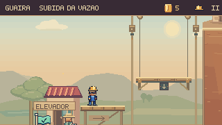
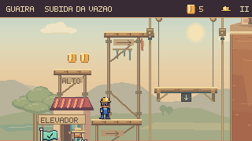
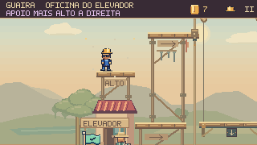
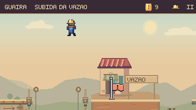
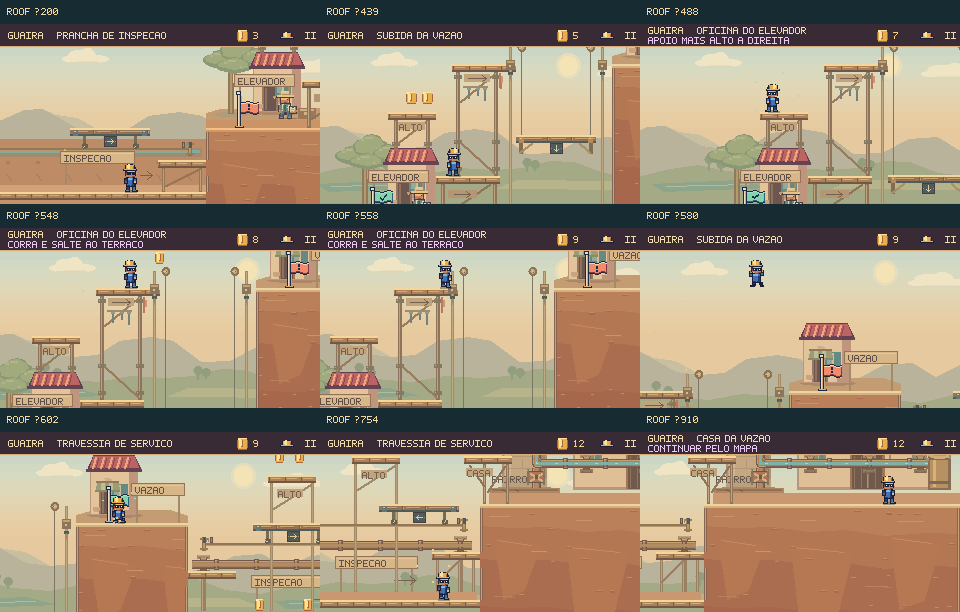

Próxima revisão: reformulação da luta contra o Prefeito →
Um caminho
pelos telhados.
A Subida à Casa da Vazão agora oferece uma sequência de saltos pela oficina do elevador. O jogador pode embarcar e acompanhar a máquina ou explorar a estrutura, ganhar altura e correr para saltar até o terraço.
Uma escolha na sacada


As moedas acima da oficina convidam a olhar para a esquerda. O primeiro salto leva ao telhado; o segundo troca de lado e alcança o andaime. Seus pilares, mãos-francesas e ferragens ligam os apoios à construção existente. A borda clara identifica as superfícies em que Feka pode pousar.
Mesmo instante e mesmos comandos desde a entrada da fase. Imagens do renderizador de produção, com câmera e física do jogo.
Explorar, subir e saltar
O percurso passa pelo canal seco, escala a oficina e atravessa para o terraço com corrida e salto. Depois, desce à galeria de inspeção e retorna à Casa. São quatro moedas novas no caminho alto; a coleta continua opcional.


Um salto curto cai no poço seco do elevador. O degrau à esquerda devolve à sacada, preservando as moedas. O percurso alto não depende do momento em que o elevador passa: as plataformas móveis mantêm uma alternativa para quem prefere embarcar.
Nove momentos do percurso

A travessia pelas máquinas continua
A prancha inicial, o elevador e a prancha de serviço continuam utilizáveis com caminhada e salto comuns. Essa partida foi refeita sem corrida, sem sentada e sem usar a rota nova.
Conferência no jogo
1.080 testes de Guaíra aprovados, incluindo 51 novos: percurso com teclado e toque simulado, movimento reduzido, 36 combinações de impulso e duração do salto, 60 momentos do ciclo do elevador, nove quedas recuperadas, pausa, checkpoints e moedas.
As oito cenas foram concluídas no navegador sem dano nos percursos ensaiados. A Subida usou a rota nova; as cinco etapas persistiram e as duas oficinas mantiveram o progresso. Build e validadores aprovados.
Os percursos demonstram execução e recuperação com a física real. Ainda não houve sessão com jogadores externos; descoberta da alternativa, diversão e dificuldade precisam dessa avaliação. As durações dos vídeos incluem comandos ensaiados e não estimam o tempo de uma primeira partida.
Critérios e reprodução · Capturas e trajetos · Verificação no capítulo · Verificação final